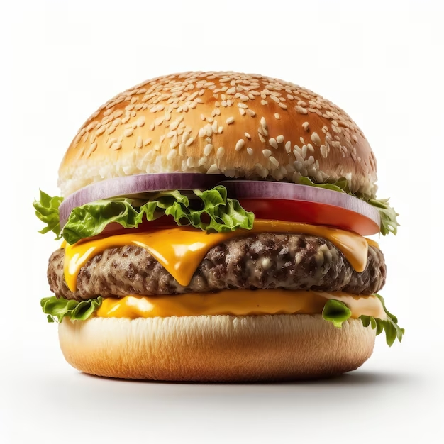

Lasagna Recipe

Description
A hamburger, or simply a burger, is a dish consisting of fillings—usually a patty of ground meat, typically beef—placed inside a sliced bun or bread roll.
Ingredients
- Ground Chuck
- Panko Bread Crumbs
- Worcestershire Sauce
- Egg
- Milk
- Seasonings
Steps
- First, set out a large mixing bowl and add in the ground beef, crushed crackers, egg, Worcestershire sauce, milk, and spices. Use your hands to combine until the mixture is very smooth thoroughly.
- press the meat down in the bowl, into an even disk. Use a knife to cut and divide the hamburger patty mixture into 6 – 1/3 pound grill or skillet patties, or 12 thin griddle patties.
- Set out a baking sheet, lined with wax paper or foil, to hold the patties. One at a time, gather the patty mix and press firmly into patties of your desired thickness. You typically want hamburger patties to be slightly larger than the buns they’ll be served on since they’ll shrink a bit in the cooking process.
- Place the formed patties on the baking sheet. With thick patties, press an indentation in the center of each patty, so they don’t puff up while cooking.
- Then, preheat the grill or a skillet to medium heat, approximately 350-400 degrees F. I love using a cast-iron skillet for getting that drool-worthy caramelized sear on the burgers.